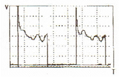
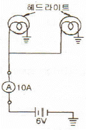

자동차정비기능사 (2008-02-03 기출문제)
1과목: 자동차공학
1. 25kgf의 물체를 5m로 올리는데 2초 걸렸다면 필요한 마력(PS)는?
- 0.5
- 0.63
- 0.70
- 0.83
(정답률: 40%)

2. 전자식 기관제어장치의 공회전 상태 제어용 입력 정보에 해당하지 않는 것은?
- 기관 회전속도
- 수온센서
- 자동 변속기의 중립신호
- 차속센서
(정답률: 55%)
3. 디젤기관에서 감압장치의 설치 목적에 적합하지 않은 것은?
- 겨울철 오일의 점도가 높을 때 시동을 용이 하게 하기 위해서이다.
- 기관의 점검 조정 및 고장 발견시에 활용하기도 한다.
- 흡입밸브나 배기밸브를 작용하여 감압 한다.
- 흡입효율을 높여 압축압력을 크게 하는데 작용시킨다.
(정답률: 45%)
4. 기관의 회전속도가 2500rpm, 연소지연시간이 1/600초라고 하면 연소지연시간 동안에 크랭크축의 회전각도는?
- 20°
- 25°
- 30°
- 35°
(정답률: 52%)
5. 다음 중 윤활유의 사용 목적이 아닌 것은?
- 방청작용
- 충격완화 및 소음방지 작용
- 냉각작용
- 발화성 향상 작용
(정답률: 80%)
6. 배기가스 저감장치 중 삼원촉매(catalytic Convertor) 장치를 사용하여 저감 시킬 수 있는 유해가스의 종류는?
- CO, HC, 흑연
- CO, NOx, 흑연
- NOx, HC, SO
- CO, HC, NOx
(정답률: 89%)
7. 디젤 분사펌브 시험기(Injection Pump Tester)로 시험할 수 있는 사항은?
- 후적
- 분사초기압력
- 분사량
- 분무상태
(정답률: 61%)
8. 가솔린 연료분사장치 인젝터의 연료 분사량은 무엇에 의해 결정되는가?
- 니들밸브의 개방 시간
- 플런저의 유효 행정
- 니들밸브의 유효 행정
- 니들밸브의 전행정
(정답률: 53%)
9. 압축비가 동일 할 때 이론 열효율이 가장 높은 사이클은?
- 오토 사이클
- 사바테 사이클
- 디젤 사이클
- 브레이톤 사이클
(정답률: 61%)
10. 전자제어식 연료 분사 장치의 주요 구성부품 중 흡입 공기량을 검축하는 장치는?
- 연료 압력 조정기
- ECU
- 공기 유량 센서
- 냉각 수온 센서
(정답률: 85%)
11. 냉각장치에서 왁스실에 왁스를 넣어 온도가 높아지면 팽창축을 열게 하는 온도 조절기는?
- 벨로즈형
- 펠릿형
- 바이패스 밸브형
- 바이메탈형
(정답률: 57%)
12. 실린더 내의 마멸은 어느 곳이 제일 적은가?
- 상사점
- 하사점
- 상사점과 하사점의 중간
- 실린더의 하단부
(정답률: 64%)
13. 베어링이 하우징 내에서 움직이지 않게 하기 위하여 베어링의 바깥 둘레를 하우징의 둘레보다 조금 크게 하여 차이를 두는 것은?
- 베어링 크러시
- 베어링 스프레드
- 베어링 돌기
- 베어링 어셈블리
(정답률: 63%)
14. 전자 제어 엔진에서 스로틀 바디의 역할을 가장 적절하게 설명한 것은?
- 공연비 조절
- 공기량 조절
- 혼합기 조절
- 회전수 조절
(정답률: 68%)
15. 가솔린 기관에서 흡기다기관 내의 압력 변화에 대응하여 연료 분사량을 일정하게유지하기 위해 인젝터에 걸리는 연료 압력을 일정하게 조절하는 것은?
- 릴리프 밸브
- MAP 센서
- 압력 조절기
- 첵 밸브
(정답률: 69%)
16. 산소센서(O2 sensor)가 피드백(feed back)제어를 할 경우로 가장 적합한 것은?
- 감속 상태에서 연료를 차단할 때
- 아이들스피드(idel speed)로 주행할 때
- 흡기 공기량의 차이가 클 때
- 배기가스 중의 산소농도의 차이가 있을 때
(정답률: 75%)
17. 다음 그림은 자동차의 부품 중 어떤 부품의 파형을 검출한 것인가?

- 스로틀 포지션센서
- 수온센서
- 스텝모터
- 인젝터
(정답률: 43%)
18. 가솔린 기관에서 고속노크(high speed knock)방지 대책으로 맞는 것은?
- 점화시기를 빠르게 한다.
- 저옥탄가 가솔린을 사용한다.
- 퇴적된 카본을 제거한다.
- 수리시 얇은 헤드 가스킷을 사용한다.
(정답률: 64%)
19. 실린더의 지름이 100mm, 행정이 100mm인 1기통 기관의 배기량은?
- 78.5cc
- 785cc
- 1000cc
- 1273cc
(정답률: 61%)
20. 다음 중 최적의 공연비를 바르게 나타낸 것은?
- 희박한 공연비
- 농후한 공연비
- 이론적으로 완전연소 가능한 공연비
- 공전시 연소 가능범위의 연비
(정답률: 81%)
2과목: 자동차정비 및 안전기준
21. LPG 차량의 연료 계통에서 가솔린 엔진의 기화기 역할을 하며 감압, 기화 및 압력조절 작용을 하는 것은?
- 솔레노이드밸브(solenoid valve)
- 믹서(mixer)
- 베이퍼라이저(vaporizer)
- 봄베(bombe)
(정답률: 68%)
22. 기관에서 밸브시트의 침하로 인한 현상이 아닌 것은?
- 밸브스프링의 장력이 커짐
- 가스의 저항이 커짐
- 밸브 닫힘이 완전하지 못함
- 블로우바이 현상이 일어남
(정답률: 60%)
23. LPG 연료장치로 구조변경검사를 시행할 경우 두께가 3.2mm인 SS41 강재로 가스용기 및 용기밸브를 보호할 경우 차체의 최후단과 최외측으로부터 각각 얼마 이상 간격을 두고 설치하여야 하는가?
- 차체의 최후단으로부터 500mm, 최우측으로부터 300mm
- 차체의 최후단으로부터 300mm, 최우측으로부터 200mm
- 차체의 최후단으로부터 200mm, 최우측으로부터 100mm
- 차체의 최후단으로부터 100mm, 최우측으로부터 50mm
(정답률: 42%)
24. 앞바퀴 얼라이먼트의 역할이 아닌 것은?
- 조향 핸들의 조향 작업을 쉽게 한다.
- 조향 핸들에 알맞은 유격을 준다.
- 타이어의 마모를 최소화 한다.
- 조향 핸들에 복원성을 준다.
(정답률: 45%)
25. 자동차 주행 중 가속 페달 작동에 따라 저항 변화가 일어 나는 센서는?
- 공기온도센서
- 수온센서
- 크랭크 포지션센서
- 스로틀 포지션센서
(정답률: 72%)
26. 클러치 디스크의 런아웃이 클 때 나타날 수 있는 현상으로 옳은 것은?
- 클러치의 단속이 불량해진다.
- 클러치 페달의 유격에 변화가 생긴다.
- 주행 중 소리가 난다.
- 클러치 스프링이 파손된다.
(정답률: 48%)
27. 차속 감응방식의 동력 조향장치에서 조향력은 고속에서 어떻게 되는가?
- 가벼운 조향이 되게 한다.
- 무거운 조향이 되게 한다.
- 무겁다가 가볍게 된다.
- 가볍다가 무겁게 된다.
(정답률: 76%)
28. 자동차에 ABS 장치를 설치한 목적과 거리가 먼 것은?
- ECU에 의해 브레이크를 컨트롤하여 조종성 확보
- 최대 제동거리 확보를 위한 안정 장치
- 앞바퀴의 잠김(록)으로 인한 조향 능력 상실 방지
- 뒷바퀴의 잠김(록)으로 차체 스핀에 의한 전복 방지
(정답률: 63%)
29. 자동차의 자동변속기에 사용되는 토크 컨버터의 구성품이 아닌 것은?
- 터빈
- 임펠러
- 스테이터
- 가이드링
(정답률: 56%)
30. 속도계 기어가 설치되는 곳으로 맞는 것은?
- 변속기 1속 기어
- 변속기 부축
- 변속기 출력축
- 변속기 톱기어
(정답률: 79%)
31. 스프링 상수가 4kgf/mm인 코일 스프링을 6cm 압축하는데 필요한 힘은?
- 240kgf
- 24kgf
- 15kgf
- 0.067kgf
(정답률: 60%)
32. 자동차에서 전자제어 현가장치의 기능이 아닌 것은?
- 급제동시 노스 다운을 방지한다.
- 급선회시 구심력 발생을 방지한다.
- 노면으로부터의 차량 높이를 조정한다.
- 노면상태에 따라 승차감을 조절한다.
(정답률: 51%)
33. 자동차의 전자제어식 자동변속기에서 인히비터 스위치의 기능에 해당하지 않는 것은?
- 시프트레버 D 레인지에서 시동기 가능하게 한다.
- 시프트레버 D 또는 L 레인지에서 시동을 불가능 하게 한다.
- 시프트레버 P 또는 N 레인지에서 시동이 가능하게 한다.
- 시프트레버 R 레인지에서 후진등을 점등되게 한다.
(정답률: 66%)
34. 자동차 자동변속기의 유압 제어장치 구성품이 아닌 것은?
- 종 감속 기어(final frduction gear)
- 오일 펌프(oil pump)
- 시프트 밸브(shift valve)
- 밸브 보디(valve body)
(정답률: 56%)
35. 자동차의 제동장치에서 듀어 서보형 브레이크의 설명으로 옳은 것은?
- 전진시 브레이크를 작동하면 1차 및 2차 슈가 자기작동하고, 후진 시는 자기작동을 하지 않는다.
- 전진시 브레이크를 작동하면 1차 슈만 자기 작동한다.
- 전, 후진 시 브레이크를 작동하면 1차 및 2차 슈가 자기 작동한다.
- 후진 시에만 1차 및 2차 슈가 자기 작동을 한다.
(정답률: 67%)
36. 종 감속장치에서 링 기어와 구동 피니언 기어의 접촉 상태를 설명한 용어가 맞지 않는 것은?
- 힐 접촉 : 구동 피니언이 링기어의 중간 부분에 접촉
- 토우 접촉 : 구동 피니언이 링기어의 소단부로 치우친 접촉
- 페이스 접촉 : 구동 피니언이 링기어의 잇면 끝에 접촉
- 플랭크 접촉 : 구동 피니언이 링기어의 이뿌리 부분에 접촉
(정답률: 36%)
37. 구동바퀴가 차체를 추진시키는 힘(구동력)을 구하는 공식으로 옳은 것은?(단. F : 구동력, T : 축의 회전역, r : 바퀴의 반지름이다.)
- F = T × r
- F = T × r × 2
- F = T/r
- F = T/(r × 2)
(정답률: 42%)
38. 공기 브레이크에서 공기의 압력을 기계적 운동으로 바꾸어 주는 장치는?
- 릴레이 밸브
- 브레이크 챔버
- 브레이크 밸브
- 브레이크 슈
(정답률: 69%)
39. 조향 기어비를 구하는 식으로 맞는 것은?
- 조향 휠의 움직인 각도를 피트먼 암의 움직인 각도로 나눈 값
- 조향 휠의 움직인 량을 사이드 슬립 량으로 나눈 값
- 피트먼 암의 움직인 거리를 사이드슬립 량으로 나눈 값
- 피트먼 암의 직선거리를 조향 휠의 직격으로 나눈 값
(정답률: 68%)
40. 자동차의 타이어에서 60 또는 70 시리즈라고 할 대 시리즈란?
- 단면 폭
- 단면 높이
- 편평비
- 최대속도표시
(정답률: 76%)
3과목: 안전관리
41. 그림과 같은 자동차의 전조등 회로에서 헤드라이트 1개의 출력은?

- 30W
- 60W
- 90W
- 120W
(정답률: 54%)
42. 반도체에서 사이리스터의 구성부가 아닌 것은?
- 캐소드
- 게이트
- 애노드
- 컬렉터
(정답률: 71%)
43. 기동전동기의 시험과 관계없는 것은?
- 저항시험
- 회전력시험
- 고부하시험
- 무부하시험
(정답률: 57%)
44. 점화장치에서 DLI 방식의 특징을 열거한 것 중 틀린 것은?
- 배전기에 의한 누전이 없다.
- 배전기 방식에 비해 내구성이 떨어지는 부품이 많아 신뢰성이 없다.
- 배전기가 없기 때문에 로터와 접지간극 사이의 고압에너지 손실이 적다.
- 배전기 캡에서 발생하는 전파 잡음이 없다.
(정답률: 66%)
45. 일반적으로 자동차에 사용되는 교류발전기용 조정기에 관한 설명 중 틀린 것은?
- 발전기 자신이 전류제한 작용을 하지 않기 때문에 전류 제한기가 필요하다.
- 전류용 다이오드가 축전지로부터 역류를 방지하기 때문에 컷아웃 릴레이가 필요하지 않다.
- 교류발전기용 조정기로는 전압 조정기만으로 충분하다.
- 교류발전기 6개의 다이오드는 3상 교류를 직류로 바꾸는 일을 한다.
(정답률: 37%)
46. 축전지에서 셀의 극판 면적을 크게 하면?
- 이용전류가 많아진다.
- 전압이 낮아진다.
- 저항이 크게 된다.
- 전해액의 비중이 높게 된다.
(정답률: 50%)
47. 자동차 냉난방 장치 능력은 차실 내외 조건의 차량 열부하에 의해 정해지는데 다음 중 열부하 항목에 속하지 않는 것은?
- 면적 부하
- 관류 부하
- 승원 부하
- 복사 부하
(정답률: 44%)
48. 지구환경 문제로 인하여 기존의 냉매는 사용을 억제하고, 대체가스로 사용되고 있는 자동차 에어컨의 냉매는?
- R-134a
- R-22
- R-16a
- R-12
(정답률: 83%)
49. 주파수를 설명한 것 중 틀린 것은?
- 1초에 60회 파형이 반복되는 것을 60Hz라고 한다.
- 교류의 파형이 반복되는 비율을 주파수라고 한다.
- 주파수는 주기의 역수로 할 수 있다.
- 주파수는 직류의 파형이 반복되는 비율이다.
(정답률: 65%)
50. 충전장치의 AC발전기에서 DC 발전기의 전기자와 같은 역할을 하는 것은?
- 스테이터
- 로터
- 실드
- 다이오드
(정답률: 46%)
51. 다음 중 해머작업 시의 안전수칙으로 틀린 것은?
- 해머는 처음과 마지막 작업시 타격하는 힘을 크게 할 것
- 해머로 녹슨 것을 때릴 때에는 반드시 보안경을 쓸 것
- 해머의 사용 면이 깨진 것을 사용하지 말 것
- 해머 작업시 타격 가공하려는 곳에 눈을 고정 시킬 것
(정답률: 79%)
52. 카바이트 취급시 주의할 점 중 잘못 설명한 것은?
- 밀봉해서 보관한다.
- 건조한 곳보다 약깐 습기가 있는 곳에 보관한다.
- 인화성이 없는 곳에 보관한다.
- 저장소에 전등을 설치할 경우 방폭 구조로 한다.
(정답률: 79%)
53. 안전장치 선정시 고려사항 중 맞지 않는 것은?
- 안전장치의 사용에 따라 방호가 완전할 것
- 안전장치의 기능 면에서 신뢰도가 클 것
- 정기 점검시 이외에는 사람의 손으로 조정할 필요가 없을 것
- 안전장치를 제거하거나 또는 기능의 정지를 용이 하게 할 수 있을 것
(정답률: 63%)
54. 리머가공에 관한 설명으로 옳은 것은?
- 리머는 직경 10mm 이상의 것은 없다.
- 리머는 드릴 구멍보다 먼저 작업한다.
- 리머는 드릴 구멍보다 더 정밀도가 높은 구멍을 가공하는데 필요하다.
- 리머는 드릴 구멍보다 더 작게 하는데 사용한다.
(정답률: 70%)
55. 측정기 취급에 대한 설명 중 잘못된 것은?
- 비중계의 눈금은 눈 높이에서 읽는다.
- 점화플러그 세척시에는 보안경을 사용한다.
- 파워 밸런스 시험은 가능한 짧은 시간 내에 실시한다.
- 회로 시험기의 0점 조정은 측정범위에 관계없이 1회만 실시한다.
(정답률: 68%)
56. 작업 중 분진방지에 특히 신경 써야 하는 작업은?
- 도장작업
- 타이어 교환작업
- 기관 분해 조립작업
- 판금 작업
(정답률: 70%)
57. 자동변속기 분해조립시 유의사항으로 틀린 것은?
- 작업시 청결을 유지하고 작업한다.
- 분해된 모든 부품은 걸레로 닦아낸다.
- 클러치판, 브레이크 디스크는 자동변속기 오일로 세척한다.
- 조립시 개스킷, 오일 실 등은 새것으로 교환한다.
(정답률: 68%)
58. 오일팬 속의 오일 색깔을 살펴 보았더니 우유색을 나타냈다면 그 원인은?
- 점도가 높은 오일을 사용했을 때
- 냉각수가 오일에 침입 되었을 때
- 4에틸 납이 오일에 침입 되었을 때
- 가솔린이 오일에 침입 되었을 때
(정답률: 82%)
59. 축전지 취급시 주의해야 할 사항이 아닌 것은?
- 중탄산소도수와 같은 중화제를 항상 준비하여 둘 것
- 축전지의 충전실은 항상 환기장치가 잘되어 있을 것
- 전해액 혼합시에는 황산에 물을 서서히 부어 넣을 것
- 황상액이 담긴 병을 옮길 때는 보호상자에 넣어 운반 할 것
(정답률: 74%)
60. 기계 취급에 관한 안전수칙 중 잘못된 것은?
- 기계운전 중에는 자리를 지킨다.
- 기계의 청소는 작동 중 수시로 한다.
- 기계운전 중 정전시는 즉시 주 전원스위치를 끈다.
- 기계공장에서는 반드시 작업복과 안전화를 착용한다.
(정답률: 83%)
일 = 무게 × 높이 = 25kgf × 5m = 125kgf·m
또한, 일의 시간당 변환율이 마력이므로, 필요한 마력은 다음과 같다.
마력 = 일 ÷ 시간 = 125kgf·m ÷ 2초 = 62.5kgf·m/s
여기서 kgf·m/s를 PS로 변환하면 다음과 같다.
1PS = 75kgf·m/s
따라서, 필요한 마력은 다음과 같다.
마력 = 62.5kgf·m/s ÷ 75kgf·m/s/PS = 0.83PS
따라서, 정답은 "0.83"이다.